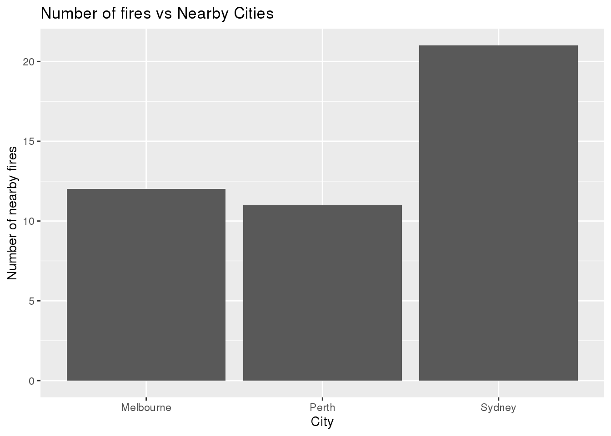
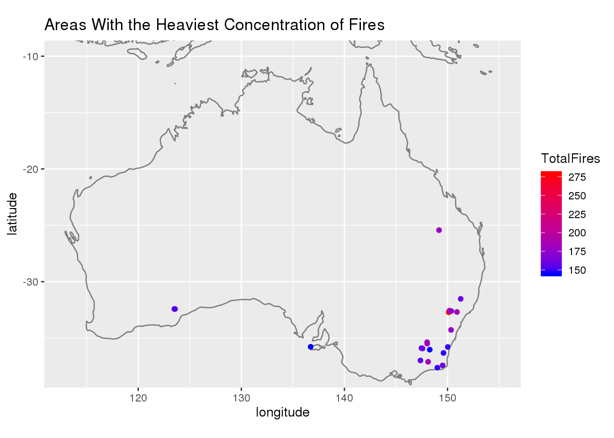
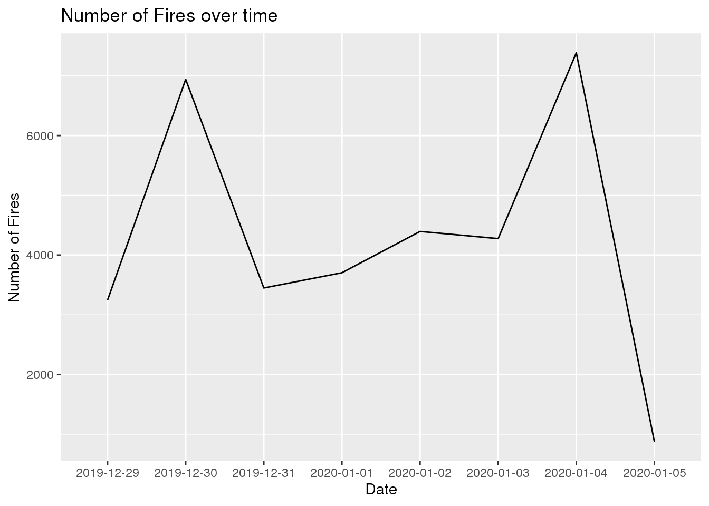

library(here)
library(ggplot2)
library(tidyverse)
library(readxl)
library(dplyr)Rainfall<-read.csv(here::here("content","post","2020-12-13-australia-fires","data","rainfall.csv"))
Temperature<-read.csv(here::here("content","post","2020-12-13-australia-fires","data","temperature.csv"))
Fires<-read.csv(here::here("content","post","2020-12-13-australia-fires","data","MODIS_C6_Australia_and_New_Zealand_7d.csv"))Using the Australia fires data from tinytuesday I will investigate the location and frequency of the fires in Australia. I will use the rainfall and MODIS datasets to explore this.
How many of these fires happened near the cities? I will examine this by counting the number of instances of fires with longitude and latitude equal to the city coordinates rounded to 0 decimal places.
CityCoord <- Rainfall %>%
select(city_name,lat,long)%>%
rename(longitude=long,latitude=lat)%>%
mutate(longitude = round(longitude,digits=0),latitude=round(latitude,digits=0))%>%
group_by(city_name)%>%
summarize(latitude=mean(latitude),longitude=mean(longitude))%>%
mutate(longitude = round(longitude,digits=0),latitude=round(latitude,digits=0))## `summarise()` ungrouping output (override with `.groups` argument)Fires %>%
mutate(longitude = round(longitude,digits=0),latitude=round(latitude,digits=0))%>%
left_join(CityCoord,by = c("longitude","latitude"))%>%
na.omit(city_name)%>%
count(city_name)%>%
ggplot(aes(city_name,n))+
geom_bar(stat="identity")+
ylab("Number of nearby fires")+
xlab("City")+
ggtitle("Number of fires vs Nearby Cities") # Question 2: Where have fires happened the most? To determine this, I will round the longitudes and latitudes of all fires to two decimal places and count the 10 areas with the highest number of fires.
Fires %>%
mutate(longitude = round(longitude,digits=2),latitude=round(latitude,digits=2))%>%
group_by(longitude,latitude)%>%
summarize(total = n())%>%
ungroup()%>%
slice_max(total, n = 10)%>%
ggplot(aes(longitude,latitude))+
borders("world")+
coord_quickmap(xlim = 110:160,ylim = -50:-10)+
geom_point()## `summarise()` regrouping output by 'longitude' (override with `.groups` argument)
It seems the areas with the highest number of fires are all near the eastern coast of Australia.
How has the frequency of fires changed over the 7 days? To determine this, I will create a line graph counting every instance of a fire over the days.
Fires %>%
count(acq_date)%>%
ggplot(aes(acq_date,n))+
geom_line(group = 1)+
ylab("Number of Fires")+
xlab("Date")+
ggtitle("Number of Fires over time")
The amount of fires is mostly consistent, but there’s a sharp drop in the number of fires on the seventh day.